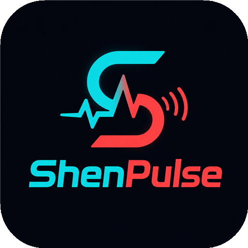

Vos commandes, au bout des doigts.
Recherche du profil actif…
Connexion automatique sur ce PC.
Tester exécute réellement cette commande. Les animations utilisent votre source Matchs habituelle. ShenPulse doit rester ouvert.